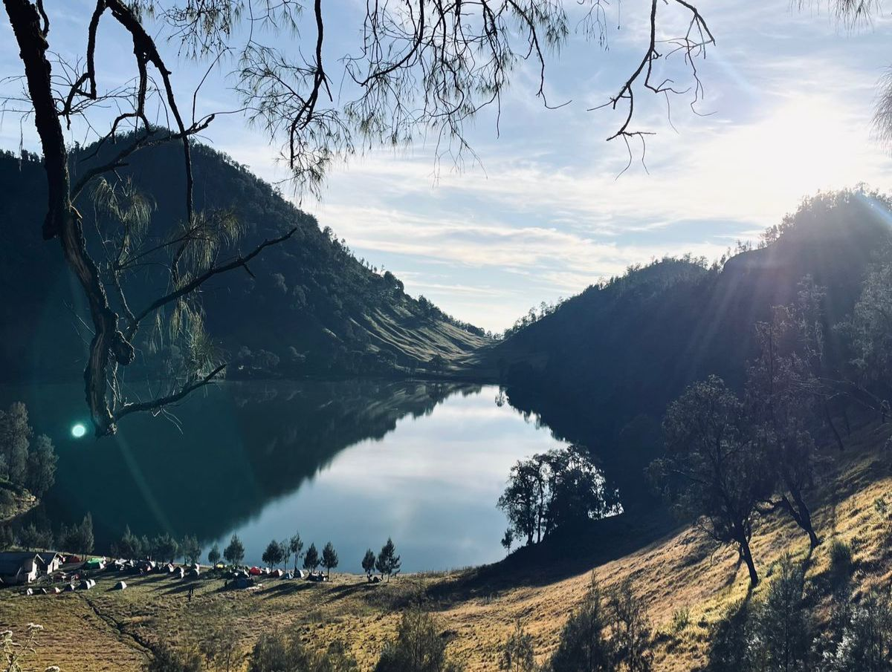

JELAJAH WISATA INDONESIA
Temukan Keindahan Alam dan Budaya Indonesia
🏡 Beranda
Selamat datang di website Jelajah Wisata Indonesia. Website ini berisi informasi berbagai tempat wisata menarik yang ada di Indonesia.
Indonesia memiliki banyak sekali destinasi wisata mulai dari pegunungan, pantai, laut, hingga wisata budaya.
🏔️ Destinasi Wisata
Berikut adalah objek wisata menarik di Jawa Timur

Gunung Prau
Gunung Prau merupakan salah satu gunung populer di Jawa Tengah yang terkenal dengan pemandangan matahari terbit dan keindahan alamnya.

Ranukumbolo
Ranukumbolo merupakan danau yang berada di kawasan Gunung Semeru dan terkenal dengan pemandangan alam yang indah serta suasana yang sejuk.

Air Terjun Madakaripura
Air Terjun Madakaripura merupakan air terjun yang berada di Probolinggo, Jawa Timur dan memiliki pemandangan tebing yang tinggi dan indah.
🎵 Musik Nusantara
Silakan dengarkan musik berikut sambil menikmati informasi wisata Indonesia.
🌄 Wonderland Indonesia
Silakan melihat video berikut sambil menikmati informasi wisata Indonesia.
Putri Aulia (27) X RPL 2